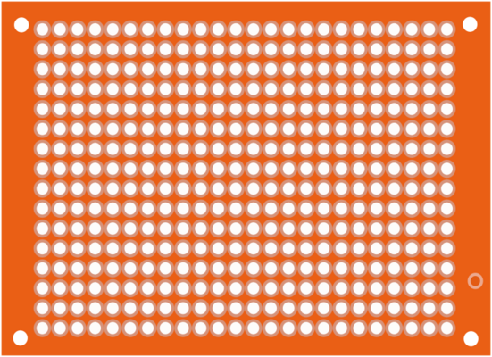
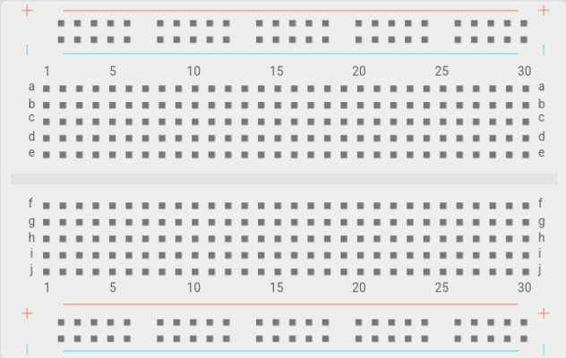

Why Plaquette?
Plaquette is a groundbreaking creative coding framework designed to empower creative practitioners by simplifying the way they work with real-time signals in tangible computing applications. By bridging the gap between low-level electronics and high-level creative expression, Plaquette enables creators to focus on what matters most: bringing their visions to life.
Note
Plaquette is a French noun pronounced pla-kett which refers to prototyping plates or boards (“plaquette de prototypage”) commonly used in designing electronic projects.
|  |  |
The Need for a New Standard
Media artists, interactive designers, digital luthiers, and electronic musicians constantly engage with real-time signals. However, when working with tangible computing systems such as embedded sensors, robotics, connected objects, and electronic music instruments, available tools such as Arduino are often very low-level and lack expressivity. Creative practitioners thus struggle to implement their vision directly using such platforms.
Consider the following case of learning how to work with a simple lignt sensor (eg. photoresistor) connected to an Arduino board on analog pin 0. The code reads as follows:
int value = analogRead(A0);
The value that is read is a raw 10-bit value returned by the Arduino board’s Analog to Digital Converter (ADC), an integer between 0 and 1023. But how is this value intuitively useful for an artist who wants to use this value creatively?
For example, what if one wants to react to a flash of light? Well, one solution would be to look at the value and compare it to a threshold:
if (value > 716) {
...
}
There are two problems with this approach.
Firstly, while it might work under certain lighting conditions, it will likely stop working if these conditions change, forcing us to make adjustments to the threshold value by hand.
Secondly, and perhaps more importantly, this piece of code does not really express what we are after. As creative practitioners, we don’t care whether the light signal is above 716 or 456 or whatnot: what we really want to know to detect a flash of light is whether the light signal is significantly high compared to ambient light.
What this example shows is that the way we are teaching and learning about sensor data is inefficient for creative applications. In other words: raw digital data lacks expressiveness.
Continuing with our example, consider how one would take the input value and directly reroute it to an analog (PWM) output on pin 9:
analogWrite(9, value / 4);
Why do we need to perform that division by 4? That’s because while the ADC gives us 10-bit values (1024 possibilities), the PWM only supports 8 bits (256 possibilities) forcing us to divide the incoming value by 4 (2 bits). But again, why is this detail important to know for an artist, designer, or musician? And what exactly does it have to do with our expressive intention?
Meet Plaquette
As a way to address these issues, Plaquette offers a general-purpose standard interface for simple, real-time signal processing for media artists. The objectives are as follow:
Allow creators to focus on the creative dimensions of their work rather than on irrelevant numerical questions, hence also facilitating their learning.
Provide creative practitioners with accessible tools that grasp high-level concepts such as “normalizing” and “detecting peaks” (rather than specific, arcane techniques on “how” to extract this information such as “FFT”, “zero-crossing” or “Chebyshev filtering”).
Facilitate teamwork and interoperability between applications by favouring an easily understandable, cross-platform way of thinking about real-time signals (for example, by keeping all signals “in check” between 0 and 1).
Plaquette responds to these challenges by adopting the following characteristics:
Easy to learn by provide carefully-chosen functionalities that respond to common problems faced by creators ie. limited to only a few core functionalities that will solve 95% of your problems.
Real-time by allowing responsive interaction without interruptions.
Focused on signals rather than on numerical values such as 255, 1024, 716, etc.)
Robust by tolerating changes in the sensory context without breaking down, because interactive works are often presented in environments that are difficult to fully control.
Interoperable and extensible by adopting an object-oriented architecture fully compatible with Arduino.